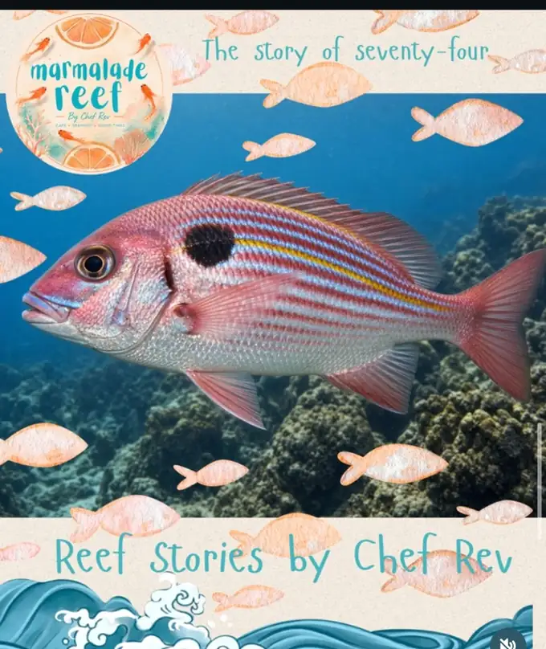

A lesson from six years old.
Chef Rev traces the start of his love for conservation back to a teacher who told his class not to buy a fish called the seventy-four. He remembers learning that the species was under pressure, and asking why people needed to protect it.
That classroom moment changed how he saw the sea. Years later, the lesson still shapes the questions he wants visitors to ask: What fish are on our plates? How were they caught? How do we know whether a species is at risk?
“Sometimes, the smallest lessons plant the biggest seeds.”
The story is about more than one fish. It is a reminder that curiosity and education can change what we choose to eat — and what we choose to protect.
Adapted from Chef Rev’s public Instagram story, posted 2 November 2026. The childhood recollection is his own; it is not a current species-status assessment.